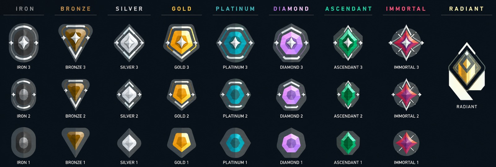

Uma vida por rodada
Se você for eliminado, acompanha o time e volta somente na rodada seguinte.
Guia para iniciantes
Nunca jogou? Em poucos minutos você vai entender as rodadas, a Spike, a compra de armas e o papel dos agentes antes de entrar na sua primeira partida.
Começar pelo básico5 contra 5
Tiro tático com agentes e habilidadesIntrodução
Valorant é um jogo gratuito de tiro tático entre duas equipes de cinco jogadores. A partida é dividida em rodadas curtas: você tem apenas uma vida por rodada e precisa cooperar com o time.
Um time começa atacando e o outro defendendo. Depois, os lados trocam. A primeira equipe a vencer 13 rodadas ganha a partida; se chegar a 12 a 12, o jogo segue para a prorrogação.
Se você for eliminado, acompanha o time e volta somente na rodada seguinte.
Os times trocam de lado durante a partida, então todos jogam nas duas funções.
Comunicação, posicionamento e habilidades importam tanto quanto acertar os tiros.
Sua primeira partida
Siga esta ordem para entender o ciclo básico sem decorar todas as regras de uma vez.
Use os créditos da partida para comprar arma, escudo e habilidades antes da rodada começar.
No ataque, leve a Spike até uma área de plantio. Na defesa, proteja essas áreas e impeça o avanço.
A Spike é o dispositivo do time atacante. Após plantada, os atacantes a protegem e os defensores tentam desarmá-la.
Vitórias e derrotas dão créditos. Às vezes, guardar dinheiro é melhor do que comprar pouco em todas as rodadas.
Sem palavras difíceis
Estes são os termos que você mais encontrará nas primeiras partidas.
Por onde jogar
Você pode jogar Valorant de graça no PC, no PlayStation 5 e no Xbox Series X|S. Para entrar, precisa de uma conta Riot.
Competitivo
O elo mostra em qual faixa você está no modo competitivo. A subida acontece aos poucos: primeiro você aprende mira, mapa, comunicação e função do agente; depois começa a jogar com mais consistência. Para jogar partidas competitivas, sua conta precisa alcançar o nível 20.
